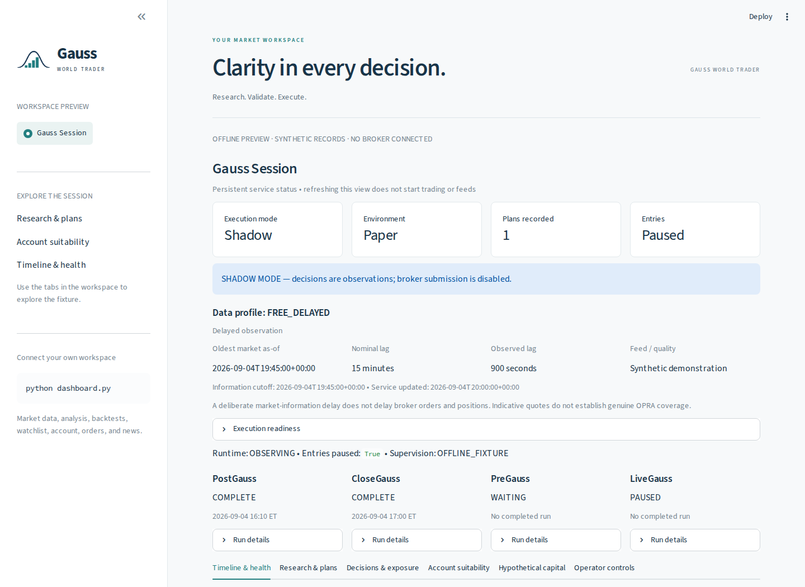

Research with context
Combine price history, technical signals, company news, and economic data from Alpaca, Finnhub, and FRED.
OPEN-SOURCE QUANTITATIVE TOOLKIT
Research markets. Put strategies to the test. Supervise your next session — in one connected Python workspace.
Python 3.12+ · Alpaca integration · MIT licensed
Built for a deliberate process.
From evidence to execution.
01 / THE WORKSPACE
Move between research, account oversight, and execution with a shared set of strategies and a persistent session ledger.

Combine price history, technical signals, company news, and economic data from Alpaca, Finnhub, and FRED.
Explore historical performance and walk-forward tests. Inspect signals, risk constraints, and account suitability.
Review session health, plans, and exposure. Use authenticated controls with a recorded operator audit.
02 / THE SESSION CYCLE
The persistent service schedules each responsibility around the exchange calendar. Select a role to follow the flow.
PostGauss reviews completed-session evidence and screens candidates for the next research cycle.
Shadow execution is the default. Paper and live execution require the applicable approvals and readiness checks. Read the operations guide ↗
03 / STRATEGY LIBRARY
Explore basic strategy examples for stocks, crypto, and options, then bring your own ideas to the shared research, backtesting, and execution framework.
Build your own strategy ↗
Included strategy examples · View source to explore
Options strategies use the CLI and gated session workflow. The interactive trading menu supports underlying options research. The multi-agent analyst committee is separate from the four session roles.
04 / GET STARTED
Install the toolkit, add your provider credentials, and choose a workflow. Start with the offline preview to explore without keys.
git clone https://github.com/Magica-Chen/GaussWorldTrader.git
cd GaussWorldTrader
python -m venv .venv
source .venv/bin/activate
python -m pip install -r requirements.txt
cp .env.example .envEdit your local .env for connected features. Run the session service on Linux, macOS, or WSL.
python -m streamlit run examples/dashboard_preview.pyExplore the real dashboard with synthetic session records. No API keys or broker connection.